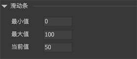

滑动条
滑动条与进度条相似，不过滑动条增加了一个“把”按钮可以让玩家拖动它改变进度条的值。
创建滑动条
可以通过两种方式创建滑动条组件。
点击主菜单“资源”->“新建滑动条”，然后按照向导的提示一步步完成。

新建一个组件，然后在组件属性里选择扩展为“滑动条”。
设计属性
在组件编辑状态下，滑动条组件的属性面板是：

标题类型如果组件内有名称为“title”的元件，则进度条可以显示一个表达当前进度的文字。百分比显示当前进度的百分比，例如“88%”。当前值/最大值例如“50/100”。当前值例如“50”。最大值例如“10000”。
反向对于横向的滑动条，一般来说，进度越大，伸缩条越向右延伸，如果是反向的，则伸缩条右边缘固定，进度越大，伸缩条越往左延伸；对于纵向的滑动条，一般来说，进度越大，伸缩条越向下延伸，如果是反向的，则伸缩条底边缘固定，进度越大，伸缩条越往上延伸。整数输入勾选后，当滑动条被用户滑动时，最后只会停止在整数位置上，也就是滑动条的值始终是整数。这个功能可用于实现分级的滑动条。API是wholeNumbers。允许通过点击更改勾选后，直接点击滑动条就可以改变滑动条的值；如果不勾选，则只能拖动滑块改变滑动条的值。API是changeOnClick。
制作方法
bar当进度改变时，改变“bar”对象的宽度。一般用于横向的进度条。注意：一定要设置bar对象的宽度为进度条处于最大值时的宽度。“bar”元件可以是任何类型，不限制于图片。
bar_v当进度改变时，改变“bar_v”对象的高度。一般用于纵向的进度条。注意：一定要设置bar_v对象的高度为进度条处于最大值时的高度。“bar_v”元件可以是任何类型，不限制于图片。
grip用于拖动的按钮。注意：grip按钮应该与bar对象建立一个关联，并放置在进度条处于最大值时的位置。这个关联是：
正向：grip左左关联到bar或者顶顶关联到bar_v；
反向：grip顶顶关联到bar或者底底关联到bar_v。title可以是装载器，也可以是标签、按钮。用于显示进度的标题。显示的内容由“标题类型”决定。
实例属性
在舞台上选中一个滑动条组件，右边的属性面板列表出现：

最小值最小进度值。最大值最大进度值。当前值当前进度。
GSlider
GSlider slider = gcom.GetChild("n1").asSlider; |
滑动条进度改变时有通知事件：
//Unity/Cry |